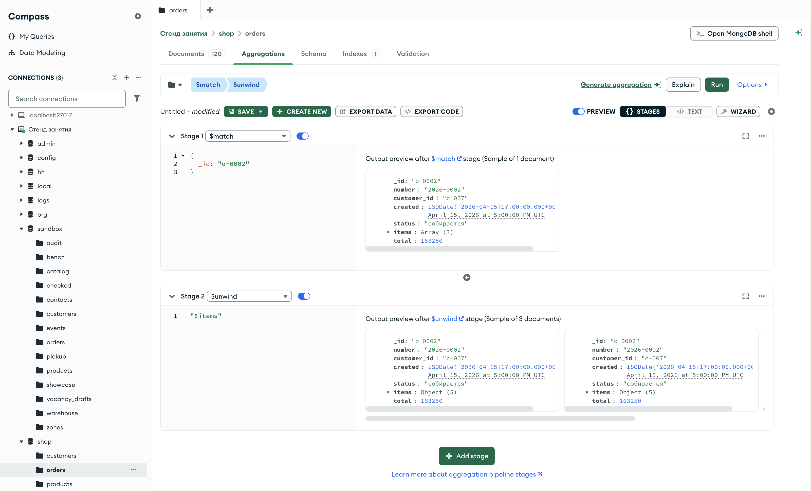

Справочник по MongoDB · модуль 4 · конвейер агрегации
4.6
$unwind:
массив становится документами
В этой главе разобрана стадия $unwind. Она превращает документ с массивом в несколько документов, по одному на каждый элемент массива. После неё к позициям заказов применяются те же стадии, что к заказам: $match, $group, $sort. Отдельно разобраны два параметра стадии — номер элемента и сохранение документов без массива — и ошибка, при которой после $unwind сумма заказов получается завышенной.
- Категория
- Агрегация
- Уровень
- Начальный
- Связанные темы
- Массивы и точечная нотация (главы 2.1 и 2.6), $match, $sort, $limit (глава 4.1), $multiply и $cond (глава 4.2), $set (глава 4.3), $group (глава 4.4), $count (глава 4.5)
- Зачем это знать
- Считать по элементам массивов: штуки и выручку по товарам и категориям, позиции заказов, склады товара
Как запускать примеры этой главы
mongodb-glava-4.6-python.zip, 65 КБmongodb-glava-4.6-ruby.zip, 64 КБmongodb-glava-4.6-go.zip, 72 КБmongodb-glava-4.6-cpp.zip, 72 КБ — все примеры главы готовыми программами, базы и стенд в Docker. В README.md — запуск в Docker, если Compass нет или он не подключается, и на установленном сервере с Compass, а также что должна напечатать каждая программа.lessons/ch4_6.py — пример вставляется в конец файлаlessons/ch4_6.rb — пример вставляется в конец файлаlessons/ch4_6.go — пример внутрь скобок в конце main, функции и типы — выше mainlessons/ch4_6.cpp — пример внутрь скобок в конце main, функции — выше maincd lessons, затем python ch4_6.pycd lessons, затем python3 ch4_6.py · в Docker: docker compose run --rm python lessons/ch4_6.pycd lessons, затем ruby ch4_6.rb · в Docker: docker compose run --rm ruby lessons/ch4_6.rbcd lessons, затем go run ch4_6.go · в Docker: docker compose run --rm go lessons/ch4_6.gocd lessons, затем g++ -std=c++17 ch4_6.cpp -o prog $(pkg-config --cflags --libs libmongocxx1) && ./prog · в Docker: docker compose run --rm cpp lessons/ch4_6.cpp§1Стадия $unwind
Кассовый чек заказа 2026-0002 содержит три строки: ноутбук, веб-камеру и наушники. Если чек разрезать по строкам, получится три полоски. Чтобы каждая полоска не потеряла связь с заказом, на каждой повторяют шапку чека: номер заказа, дату, покупателя.
В заказе магазина строки чека — массив items, каждая позиция в нём — вложенный документ с полями sku, title, category, qty и price. Стадии модуля обрабатывают документы целиком. Пока позиции лежат внутри заказов, сгруппировать их по товарам нельзя.
Стадия $unwind разворачивает массив: из документа с массивом из N элементов она выпускает N документов. В каждом выходном документе все поля исходного, а на месте массива — один его элемент. Параметр стадии — путь к полю массива со знаком $: {"$unwind": "$items"}.
Пример отбирает заказ 2026-0002, разворачивает его позиции и выводит у каждого выходного документа номер заказа, название и количество товара.
У стадии $unwind в mongocxx::pipeline есть свой метод — unwind, параметр — путь к полю строкой.
pipeline = [
{"$match": {"_id": "o-0002"}},
{"$unwind": "$items"},
]
show(orders.aggregate(pipeline), "number", "items.title", "items.qty")
mongocxx::pipeline pipeline; pipeline.match(make_document(kvp("_id", "o-0002"))); pipeline.unwind("$items"); show(orders.aggregate(pipeline), {"number", "items.title", "items.qty"});
pipeline := mongo.Pipeline{
{{Key: "$match", Value: bson.D{{Key: "_id", Value: "o-0002"}}}},
{{Key: "$unwind", Value: "$items"}},
}
cursor, _ := orders.Aggregate(ctx, pipeline)
show(cursor, "number", "items.title", "items.qty")
pipeline = [
{ "$match" => { "_id" => "o-0002" } },
{ "$unwind" => "$items" },
]
show(orders.aggregate(pipeline), "number", "items.title", "items.qty")
2026-0002 | Ноутбук ASUS VivoBook 15 | 1 2026-0002 | Веб-камера Logitech C920 | 1 2026-0002 | Наушники Sony WH-1000XM5 | 3 документов: 3
2026-0002 | Ноутбук ASUS VivoBook 15 | 1 2026-0002 | Веб-камера Logitech C920 | 1 2026-0002 | Наушники Sony WH-1000XM5 | 3 документов: 3
2026-0002 | Ноутбук ASUS VivoBook 15 | 1 2026-0002 | Веб-камера Logitech C920 | 1 2026-0002 | Наушники Sony WH-1000XM5 | 3 документов: 3
2026-0002 | Ноутбук ASUS VivoBook 15 | 1 2026-0002 | Веб-камера Logitech C920 | 1 2026-0002 | Наушники Sony WH-1000XM5 | 3 документов: 3
Из одного заказа получилось три документа. Номер заказа повторён в каждом, а в поле items теперь лежит одна позиция — вложенный документ. Поэтому путь items.title даёт одно название. На схеме — заказ до стадии и три документа после неё.
Цветом отмечено, какой элемент массива попал в какой документ. Поля number и total скопированы во все три документа без изменений; остальные поля заказа копируются так же и на схеме не показаны. У всех трёх документов один и тот же _id — o-0002.
Один заказ дал три документа. Сколько документов получится из всей коллекции, зависит от длины массивов.
§2Сколько документов выходит из $unwind
Число документов после $unwind равно сумме длин массивов всех документов. В заказах магазина от одной до четырёх позиций. Пример считает стадией $count заказы и документы после $unwind.
orders_count = [
{"$count": "orders"},
]
lines_count = [
{"$unwind": "$items"},
{"$count": "lines"},
]
print("── заказов")
for doc in orders.aggregate(orders_count):
print(doc)
print("── позиций после $unwind")
for doc in orders.aggregate(lines_count):
print(doc)
mongocxx::pipeline orders_count; orders_count.count("orders"); mongocxx::pipeline lines_count; lines_count.unwind("$items"); lines_count.count("lines"); std::cout << "── заказов" << std::endl; for (auto&& doc : orders.aggregate(orders_count)) { std::cout << bsoncxx::to_json(doc, bsoncxx::ExtendedJsonMode::k_relaxed) << std::endl; } std::cout << "── позиций после $unwind" << std::endl; for (auto&& doc : orders.aggregate(lines_count)) { std::cout << bsoncxx::to_json(doc, bsoncxx::ExtendedJsonMode::k_relaxed) << std::endl; }
ordersCount := mongo.Pipeline{
{{Key: "$count", Value: "orders"}},
}
linesCount := mongo.Pipeline{
{{Key: "$unwind", Value: "$items"}},
{{Key: "$count", Value: "lines"}},
}
fmt.Println("── заказов")
cursor, _ := orders.Aggregate(ctx, ordersCount)
for cursor.Next(ctx) {
var doc bson.D
cursor.Decode(&doc)
out, _ := bson.MarshalExtJSON(doc, false, false)
fmt.Println(string(out))
}
fmt.Println("── позиций после $unwind")
cursor, _ = orders.Aggregate(ctx, linesCount)
for cursor.Next(ctx) {
var doc bson.D
cursor.Decode(&doc)
out, _ := bson.MarshalExtJSON(doc, false, false)
fmt.Println(string(out))
}
orders_count = [
{ "$count" => "orders" },
]
lines_count = [
{ "$unwind" => "$items" },
{ "$count" => "lines" },
]
puts "── заказов"
orders.aggregate(orders_count).each { |doc| puts doc.inspect }
puts "── позиций после $unwind"
orders.aggregate(lines_count).each { |doc| puts doc.inspect }
── заказов
{'orders': 120}
── позиций после $unwind
{'lines': 271}
── заказов
{ "orders" : 120 }
── позиций после $unwind
{ "lines" : 271 }
── заказов
{"orders":120}
── позиций после $unwind
{"lines":271}
── заказов
{"orders"=>120}
── позиций после $unwind
{"lines"=>271}
Заказов 120, документов после $unwind — 271. На схеме видно, откуда берётся это число: заказы сгруппированы по числу позиций.
| Позиций в заказе | Заказов | Документов после $unwind |
|---|---|---|
| 1 | 39 | 39 × 1 = 39 |
| 2 | 34 | 34 × 2 = 68 |
| 3 | 24 | 24 × 3 = 72 |
| 4 | 23 | 23 × 4 = 92 |
| всего | 120 | 271 |
Каждый заказ даёт столько документов, сколько у него позиций. Сумма последнего столбца — число документов на выходе стадии.
После $unwind каждый документ потока — одна позиция заказа. Значит, стадия $group из главы 4.4 группирует уже позиции.
§3Группировка по элементам массива
Чтобы узнать, сколько ноутбуков продано, бухгалтер не считает чеки, в которых есть ноутбук: он выписывает из всех чеков строки с ноутбуками и складывает количества. С заказами то же самое: категория и количество записаны у каждой позиции.
Пример разворачивает позиции и группирует их по категории товара. Для каждой категории считаются три числа: позиций — аккумулятор {"$sum": 1}, штук — сумма items.qty, выручка — сумма произведений количества на цену. Произведение записывается выражением $multiply из главы 4.2.
pipeline = [
{"$unwind": "$items"},
{"$group": {
"_id": "$items.category",
"lines": {"$sum": 1},
"qty": {"$sum": "$items.qty"},
"revenue": {"$sum": {"$multiply": ["$items.qty", "$items.price"]}},
}},
{"$sort": {"revenue": -1}},
]
for doc in orders.aggregate(pipeline):
print(doc)
mongocxx::pipeline pipeline; pipeline.unwind("$items"); pipeline.group(make_document( kvp("_id", "$items.category"), kvp("lines", make_document(kvp("$sum", 1))), kvp("qty", make_document(kvp("$sum", "$items.qty"))), kvp("revenue", make_document( kvp("$sum", make_document(kvp("$multiply", make_array("$items.qty", "$items.price")))))))); pipeline.sort(make_document(kvp("revenue", -1))); for (auto&& doc : orders.aggregate(pipeline)) { std::cout << bsoncxx::to_json(doc, bsoncxx::ExtendedJsonMode::k_relaxed) << std::endl; }
pipeline := mongo.Pipeline{
{{Key: "$unwind", Value: "$items"}},
{{Key: "$group", Value: bson.D{
{Key: "_id", Value: "$items.category"},
{Key: "lines", Value: bson.D{{Key: "$sum", Value: 1}}},
{Key: "qty", Value: bson.D{{Key: "$sum", Value: "$items.qty"}}},
{Key: "revenue", Value: bson.D{
{Key: "$sum", Value: bson.D{
{Key: "$multiply", Value: bson.A{"$items.qty", "$items.price"}}}}}}}}},
{{Key: "$sort", Value: bson.D{{Key: "revenue", Value: -1}}}},
}
cursor, _ := orders.Aggregate(ctx, pipeline)
for cursor.Next(ctx) {
var doc bson.D
cursor.Decode(&doc)
out, _ := bson.MarshalExtJSON(doc, false, false)
fmt.Println(string(out))
}
pipeline = [
{ "$unwind" => "$items" },
{ "$group" => {
"_id" => "$items.category",
"lines" => { "$sum" => 1 },
"qty" => { "$sum" => "$items.qty" },
"revenue" => { "$sum" => { "$multiply" => ["$items.qty", "$items.price"] } },
} },
{ "$sort" => { "revenue" => -1 } },
]
orders.aggregate(pipeline).each { |doc| puts doc.inspect }
{'_id': 'ноутбуки', 'lines': 67, 'qty': 103, 'revenue': 8085980}
{'_id': 'смартфоны', 'lines': 57, 'qty': 103, 'revenue': 4487970}
{'_id': 'периферия', 'lines': 66, 'qty': 106, 'revenue': 1606540}
{'_id': 'комплектующие', 'lines': 48, 'qty': 75, 'revenue': 1067950}
{'_id': 'аксессуары', 'lines': 33, 'qty': 53, 'revenue': 137870}
{ "_id" : "ноутбуки", "lines" : 67, "qty" : 103, "revenue" : 8085980 }
{ "_id" : "смартфоны", "lines" : 57, "qty" : 103, "revenue" : 4487970 }
{ "_id" : "периферия", "lines" : 66, "qty" : 106, "revenue" : 1606540 }
{ "_id" : "комплектующие", "lines" : 48, "qty" : 75, "revenue" : 1067950 }
{ "_id" : "аксессуары", "lines" : 33, "qty" : 53, "revenue" : 137870 }
{"_id":"ноутбуки","lines":67,"qty":103,"revenue":8085980}
{"_id":"смартфоны","lines":57,"qty":103,"revenue":4487970}
{"_id":"периферия","lines":66,"qty":106,"revenue":1606540}
{"_id":"комплектующие","lines":48,"qty":75,"revenue":1067950}
{"_id":"аксессуары","lines":33,"qty":53,"revenue":137870}
{"_id"=>"ноутбуки", "lines"=>67, "qty"=>103, "revenue"=>8085980}
{"_id"=>"смартфоны", "lines"=>57, "qty"=>103, "revenue"=>4487970}
{"_id"=>"периферия", "lines"=>66, "qty"=>106, "revenue"=>1606540}
{"_id"=>"комплектующие", "lines"=>48, "qty"=>75, "revenue"=>1067950}
{"_id"=>"аксессуары", "lines"=>33, "qty"=>53, "revenue"=>137870}
Пять категорий отсортированы по выручке. Больше всего выручки дают ноутбуки: 8 085 980 при 103 штуках. Штук периферии продано больше — 106, а выручка у неё в пять раз меньше: товары дешевле. На схеме выручка категорий показана полосами в одном масштабе.
Позиций 67 + 57 + 66 + 48 + 33 = 271 — все документы после $unwind. Выручка всех категорий вместе — 15 386 310.
Выручку здесь посчитали по полям позиции. У каждого документа после $unwind есть и поле total — итог заказа. Сложить его кажется проще, но результат будет другим.
§4Поля документа повторяются
Если на каждой полоске разрезанного чека написан итог всего чека и полоски потом сложить, итог чека из трёх строк будет посчитан трижды. После $unwind происходит то же: поле total заказа скопировано в каждую его позицию.
Пример считает выручку тремя способами: сумму total по заказам, сумму total после $unwind и сумму «количество × цена» после $unwind.
by_orders = [
{"$group": {"_id": None, "revenue": {"$sum": "$total"}}},
]
by_lines_total = [
{"$unwind": "$items"},
{"$group": {"_id": None, "revenue": {"$sum": "$total"}}},
]
by_lines = [
{"$unwind": "$items"},
{"$group": {
"_id": None,
"revenue": {"$sum": {"$multiply": ["$items.qty", "$items.price"]}},
}},
]
print("── сумма total по заказам")
for doc in orders.aggregate(by_orders):
print(doc)
print("── сумма total после $unwind")
for doc in orders.aggregate(by_lines_total):
print(doc)
print("── сумма qty × price после $unwind")
for doc in orders.aggregate(by_lines):
print(doc)
mongocxx::pipeline by_orders; by_orders.group(make_document( kvp("_id", bsoncxx::types::b_null{}), kvp("revenue", make_document(kvp("$sum", "$total"))))); mongocxx::pipeline by_lines_total; by_lines_total.unwind("$items"); by_lines_total.group(make_document( kvp("_id", bsoncxx::types::b_null{}), kvp("revenue", make_document(kvp("$sum", "$total"))))); mongocxx::pipeline by_lines; by_lines.unwind("$items"); by_lines.group(make_document( kvp("_id", bsoncxx::types::b_null{}), kvp("revenue", make_document( kvp("$sum", make_document(kvp("$multiply", make_array("$items.qty", "$items.price")))))))); std::cout << "── сумма total по заказам" << std::endl; for (auto&& doc : orders.aggregate(by_orders)) { std::cout << bsoncxx::to_json(doc, bsoncxx::ExtendedJsonMode::k_relaxed) << std::endl; } std::cout << "── сумма total после $unwind" << std::endl; for (auto&& doc : orders.aggregate(by_lines_total)) { std::cout << bsoncxx::to_json(doc, bsoncxx::ExtendedJsonMode::k_relaxed) << std::endl; } std::cout << "── сумма qty × price после $unwind" << std::endl; for (auto&& doc : orders.aggregate(by_lines)) { std::cout << bsoncxx::to_json(doc, bsoncxx::ExtendedJsonMode::k_relaxed) << std::endl; }
byOrders := mongo.Pipeline{
{{Key: "$group", Value: bson.D{
{Key: "_id", Value: nil},
{Key: "revenue", Value: bson.D{{Key: "$sum", Value: "$total"}}}}}},
}
byLinesTotal := mongo.Pipeline{
{{Key: "$unwind", Value: "$items"}},
{{Key: "$group", Value: bson.D{
{Key: "_id", Value: nil},
{Key: "revenue", Value: bson.D{{Key: "$sum", Value: "$total"}}}}}},
}
byLines := mongo.Pipeline{
{{Key: "$unwind", Value: "$items"}},
{{Key: "$group", Value: bson.D{
{Key: "_id", Value: nil},
{Key: "revenue", Value: bson.D{
{Key: "$sum", Value: bson.D{
{Key: "$multiply", Value: bson.A{"$items.qty", "$items.price"}}}}}}}}},
}
fmt.Println("── сумма total по заказам")
cursor, _ := orders.Aggregate(ctx, byOrders)
for cursor.Next(ctx) {
var doc bson.D
cursor.Decode(&doc)
out, _ := bson.MarshalExtJSON(doc, false, false)
fmt.Println(string(out))
}
fmt.Println("── сумма total после $unwind")
cursor, _ = orders.Aggregate(ctx, byLinesTotal)
for cursor.Next(ctx) {
var doc bson.D
cursor.Decode(&doc)
out, _ := bson.MarshalExtJSON(doc, false, false)
fmt.Println(string(out))
}
fmt.Println("── сумма qty × price после $unwind")
cursor, _ = orders.Aggregate(ctx, byLines)
for cursor.Next(ctx) {
var doc bson.D
cursor.Decode(&doc)
out, _ := bson.MarshalExtJSON(doc, false, false)
fmt.Println(string(out))
}
by_orders = [
{ "$group" => { "_id" => nil, "revenue" => { "$sum" => "$total" } } },
]
by_lines_total = [
{ "$unwind" => "$items" },
{ "$group" => { "_id" => nil, "revenue" => { "$sum" => "$total" } } },
]
by_lines = [
{ "$unwind" => "$items" },
{ "$group" => {
"_id" => nil,
"revenue" => { "$sum" => { "$multiply" => ["$items.qty", "$items.price"] } },
} },
]
puts "── сумма total по заказам"
orders.aggregate(by_orders).each { |doc| puts doc.inspect }
puts "── сумма total после $unwind"
orders.aggregate(by_lines_total).each { |doc| puts doc.inspect }
puts "── сумма qty × price после $unwind"
orders.aggregate(by_lines).each { |doc| puts doc.inspect }
── сумма total по заказам
{'_id': None, 'revenue': 15386310}
── сумма total после $unwind
{'_id': None, 'revenue': 41847990}
── сумма qty × price после $unwind
{'_id': None, 'revenue': 15386310}
── сумма total по заказам
{ "_id" : null, "revenue" : 15386310 }
── сумма total после $unwind
{ "_id" : null, "revenue" : 41847990 }
── сумма qty × price после $unwind
{ "_id" : null, "revenue" : 15386310 }
── сумма total по заказам
{"_id":null,"revenue":15386310}
── сумма total после $unwind
{"_id":null,"revenue":41847990}
── сумма qty × price после $unwind
{"_id":null,"revenue":15386310}
── сумма total по заказам
{"_id"=>nil, "revenue"=>15386310}
── сумма total после $unwind
{"_id"=>nil, "revenue"=>41847990}
── сумма qty × price после $unwind
{"_id"=>nil, "revenue"=>15386310}
Первое и третье числа совпадают — 15 386 310: итог заказа равен сумме его позиций. Второе число, 41 847 990, почти втрое больше. На схеме — как это получается на одном заказе.
| Документ после $unwind | total | qty × price |
|---|---|---|
| ASUS VivoBook 15 | 163 250 | 1 × 51 490 = 51 490 |
| Logitech C920 | 163 250 | 1 × 6 790 = 6 790 |
| Sony WH-1000XM5 | 163 250 | 3 × 34 990 = 104 970 |
| сумма | 489 750 — итог заказа трижды | 163 250 — итог заказа |
Заказ из одной позиции учитывается в сумме total один раз, из четырёх — четыре раза. Поэтому по всей коллекции сумма завышена в 2,7 раза.
Правило: после $unwind складывают поля позиции. Поля заказа складывают до $unwind или отбирают по одному на заказ. Следующий вопрос — где в конвейере ставить отбор $match.
§5$match до $unwind и после
Условие на поле массива можно проверить и у заказа, и у позиции. Результат разный. Условие {"items.category": "ноутбуки"} до $unwind отбирает заказы, в которых есть хотя бы один ноутбук (глава 2.6). Такой заказ проходит целиком, вместе с мышью и наушниками. После $unwind то же условие проверяется у каждой позиции и пропускает только позиции с ноутбуками.
Пример считает документы в конце трёх конвейеров: $match до $unwind, после и в обоих местах.
match_before = [
{"$match": {"items.category": "ноутбуки"}},
{"$unwind": "$items"},
{"$count": "lines"},
]
match_after = [
{"$unwind": "$items"},
{"$match": {"items.category": "ноутбуки"}},
{"$count": "lines"},
]
match_both = [
{"$match": {"items.category": "ноутбуки"}},
{"$unwind": "$items"},
{"$match": {"items.category": "ноутбуки"}},
{"$count": "lines"},
]
print("── $match до $unwind")
for doc in orders.aggregate(match_before):
print(doc)
print("── $match после $unwind")
for doc in orders.aggregate(match_after):
print(doc)
print("── $match до и после")
for doc in orders.aggregate(match_both):
print(doc)
mongocxx::pipeline match_before; match_before.match(make_document(kvp("items.category", "ноутбуки"))); match_before.unwind("$items"); match_before.count("lines"); mongocxx::pipeline match_after; match_after.unwind("$items"); match_after.match(make_document(kvp("items.category", "ноутбуки"))); match_after.count("lines"); mongocxx::pipeline match_both; match_both.match(make_document(kvp("items.category", "ноутбуки"))); match_both.unwind("$items"); match_both.match(make_document(kvp("items.category", "ноутбуки"))); match_both.count("lines"); std::cout << "── $match до $unwind" << std::endl; for (auto&& doc : orders.aggregate(match_before)) { std::cout << bsoncxx::to_json(doc, bsoncxx::ExtendedJsonMode::k_relaxed) << std::endl; } std::cout << "── $match после $unwind" << std::endl; for (auto&& doc : orders.aggregate(match_after)) { std::cout << bsoncxx::to_json(doc, bsoncxx::ExtendedJsonMode::k_relaxed) << std::endl; } std::cout << "── $match до и после" << std::endl; for (auto&& doc : orders.aggregate(match_both)) { std::cout << bsoncxx::to_json(doc, bsoncxx::ExtendedJsonMode::k_relaxed) << std::endl; }
matchBefore := mongo.Pipeline{
{{Key: "$match", Value: bson.D{{Key: "items.category", Value: "ноутбуки"}}}},
{{Key: "$unwind", Value: "$items"}},
{{Key: "$count", Value: "lines"}},
}
matchAfter := mongo.Pipeline{
{{Key: "$unwind", Value: "$items"}},
{{Key: "$match", Value: bson.D{{Key: "items.category", Value: "ноутбуки"}}}},
{{Key: "$count", Value: "lines"}},
}
matchBoth := mongo.Pipeline{
{{Key: "$match", Value: bson.D{{Key: "items.category", Value: "ноутбуки"}}}},
{{Key: "$unwind", Value: "$items"}},
{{Key: "$match", Value: bson.D{{Key: "items.category", Value: "ноутбуки"}}}},
{{Key: "$count", Value: "lines"}},
}
fmt.Println("── $match до $unwind")
cursor, _ := orders.Aggregate(ctx, matchBefore)
for cursor.Next(ctx) {
var doc bson.D
cursor.Decode(&doc)
out, _ := bson.MarshalExtJSON(doc, false, false)
fmt.Println(string(out))
}
fmt.Println("── $match после $unwind")
cursor, _ = orders.Aggregate(ctx, matchAfter)
for cursor.Next(ctx) {
var doc bson.D
cursor.Decode(&doc)
out, _ := bson.MarshalExtJSON(doc, false, false)
fmt.Println(string(out))
}
fmt.Println("── $match до и после")
cursor, _ = orders.Aggregate(ctx, matchBoth)
for cursor.Next(ctx) {
var doc bson.D
cursor.Decode(&doc)
out, _ := bson.MarshalExtJSON(doc, false, false)
fmt.Println(string(out))
}
match_before = [
{ "$match" => { "items.category" => "ноутбуки" } },
{ "$unwind" => "$items" },
{ "$count" => "lines" },
]
match_after = [
{ "$unwind" => "$items" },
{ "$match" => { "items.category" => "ноутбуки" } },
{ "$count" => "lines" },
]
match_both = [
{ "$match" => { "items.category" => "ноутбуки" } },
{ "$unwind" => "$items" },
{ "$match" => { "items.category" => "ноутбуки" } },
{ "$count" => "lines" },
]
puts "── $match до $unwind"
orders.aggregate(match_before).each { |doc| puts doc.inspect }
puts "── $match после $unwind"
orders.aggregate(match_after).each { |doc| puts doc.inspect }
puts "── $match до и после"
orders.aggregate(match_both).each { |doc| puts doc.inspect }
── $match до $unwind
{'lines': 154}
── $match после $unwind
{'lines': 67}
── $match до и после
{'lines': 67}
── $match до $unwind
{ "lines" : 154 }
── $match после $unwind
{ "lines" : 67 }
── $match до и после
{ "lines" : 67 }
── $match до $unwind
{"lines":154}
── $match после $unwind
{"lines":67}
── $match до и после
{"lines":67}
── $match до $unwind
{"lines"=>154}
── $match после $unwind
{"lines"=>67}
── $match до и после
{"lines"=>67}
$match до $unwind пропустил 59 заказов с ноутбуками, и после разворота из них вышло 154 позиции. $match после $unwind оставил 67 позиций — только ноутбуки. На схеме — из каких категорий состоят 154 позиции первого конвейера.
| Категория позиции | Позиций | Проходит $match после $unwind |
|---|---|---|
| ноутбуки | 67 | да |
| периферия | 36 | нет |
| смартфоны | 23 | нет |
| комплектующие | 16 | нет |
| аксессуары | 12 | нет |
Условие до $unwind отобрало заказы целиком, поэтому в потоке остались 87 позиций других категорий. Условие после $unwind убирает их.
Третий конвейер даёт те же 67 позиций, что второй. Первый $match в нём сокращает работу: разворачиваются 59 заказов из 120. На коллекции с индексом по items.category этот $match выполняется по индексу (глава 3.2, §8). Второй $match оставляет нужные позиции.
Документы после $unwind отличаются только элементом массива. Номер элемента в массиве по умолчанию теряется.
§6Номер элемента: includeArrayIndex
Строки чека пронумерованы: «1. Ноутбук, 2. Веб-камера, 3. Наушники». После разворота массива номер строки иногда нужен — например, чтобы найти первую позицию каждого заказа.
У $unwind есть полная запись — документ параметров. Поле path содержит путь к массиву, а параметр includeArrayIndex — имя нового поля, в которое стадия запишет номер элемента в массиве. Номера начинаются с нуля.
Полная запись передаётся в метод unwind документом вместо строки.
pipeline = [
{"$match": {"_id": "o-0002"}},
{"$unwind": {"path": "$items", "includeArrayIndex": "pos"}},
]
show(orders.aggregate(pipeline), "number", "pos", "items.title")
mongocxx::pipeline pipeline; pipeline.match(make_document(kvp("_id", "o-0002"))); pipeline.unwind(make_document(kvp("path", "$items"), kvp("includeArrayIndex", "pos"))); show(orders.aggregate(pipeline), {"number", "pos", "items.title"});
pipeline := mongo.Pipeline{
{{Key: "$match", Value: bson.D{{Key: "_id", Value: "o-0002"}}}},
{{Key: "$unwind", Value: bson.D{
{Key: "path", Value: "$items"},
{Key: "includeArrayIndex", Value: "pos"}}}},
}
cursor, _ := orders.Aggregate(ctx, pipeline)
show(cursor, "number", "pos", "items.title")
pipeline = [
{ "$match" => { "_id" => "o-0002" } },
{ "$unwind" => { "path" => "$items", "includeArrayIndex" => "pos" } },
]
show(orders.aggregate(pipeline), "number", "pos", "items.title")
2026-0002 | 0 | Ноутбук ASUS VivoBook 15 2026-0002 | 1 | Веб-камера Logitech C920 2026-0002 | 2 | Наушники Sony WH-1000XM5 документов: 3
2026-0002 | 0 | Ноутбук ASUS VivoBook 15 2026-0002 | 1 | Веб-камера Logitech C920 2026-0002 | 2 | Наушники Sony WH-1000XM5 документов: 3
2026-0002 | 0 | Ноутбук ASUS VivoBook 15 2026-0002 | 1 | Веб-камера Logitech C920 2026-0002 | 2 | Наушники Sony WH-1000XM5 документов: 3
2026-0002 | 0 | Ноутбук ASUS VivoBook 15 2026-0002 | 1 | Веб-камера Logitech C920 2026-0002 | 2 | Наушники Sony WH-1000XM5 документов: 3
У трёх документов номера 0, 1 и 2 — в том порядке, в каком позиции лежат в массиве. Поле pos добавлено к каждому документу и дальше используется как обычное поле: например, {"$match": {"pos": 0}} оставит первую позицию каждого заказа.
| Строка чека | Позиция | pos |
|---|---|---|
| 1 | Ноутбук ASUS VivoBook 15 | 0 |
| 2 | Веб-камера Logitech C920 | 1 |
| 3 | Наушники Sony WH-1000XM5 | 2 |
Номер элемента массива на единицу меньше номера строки чека, как индекс списка в Python.
Второй параметр полной записи задаёт, что стадия делает с документами без массива.
§7Документы без массива
Если в стопке есть чек без строк, после разрезания от него не остаётся ни одной полоски. В отчёте о покупках этот покупатель не появится. $unwind поступает так же. Документ без поля, с null или с пустым массивом не даёт ни одного выходного документа и исчезает из потока.
Параметр preserveNullAndEmptyArrays со значением true сохраняет такие документы: стадия выпускает каждый из них один раз, без поля массива. Есть и третий случай: поле есть, но это не массив. Тогда $unwind выпускает документ один раз, как массив из одного элемента.
У заказов магазина массив items есть всегда. Поле promo — строка с кодом скидки — есть только у 40 заказов из 120. Первый пример разворачивает promo без параметра и с ним.
promo_plain = [
{"$unwind": "$promo"},
{"$count": "orders"},
]
promo_kept = [
{"$unwind": {"path": "$promo", "preserveNullAndEmptyArrays": True}},
{"$count": "orders"},
]
print("── $unwind по promo")
for doc in orders.aggregate(promo_plain):
print(doc)
print("── с preserveNullAndEmptyArrays")
for doc in orders.aggregate(promo_kept):
print(doc)
mongocxx::pipeline promo_plain; promo_plain.unwind("$promo"); promo_plain.count("orders"); mongocxx::pipeline promo_kept; promo_kept.unwind(make_document(kvp("path", "$promo"), kvp("preserveNullAndEmptyArrays", true))); promo_kept.count("orders"); std::cout << "── $unwind по promo" << std::endl; for (auto&& doc : orders.aggregate(promo_plain)) { std::cout << bsoncxx::to_json(doc, bsoncxx::ExtendedJsonMode::k_relaxed) << std::endl; } std::cout << "── с preserveNullAndEmptyArrays" << std::endl; for (auto&& doc : orders.aggregate(promo_kept)) { std::cout << bsoncxx::to_json(doc, bsoncxx::ExtendedJsonMode::k_relaxed) << std::endl; }
promoPlain := mongo.Pipeline{
{{Key: "$unwind", Value: "$promo"}},
{{Key: "$count", Value: "orders"}},
}
promoKept := mongo.Pipeline{
{{Key: "$unwind", Value: bson.D{
{Key: "path", Value: "$promo"},
{Key: "preserveNullAndEmptyArrays", Value: true}}}},
{{Key: "$count", Value: "orders"}},
}
fmt.Println("── $unwind по promo")
cursor, _ := orders.Aggregate(ctx, promoPlain)
for cursor.Next(ctx) {
var doc bson.D
cursor.Decode(&doc)
out, _ := bson.MarshalExtJSON(doc, false, false)
fmt.Println(string(out))
}
fmt.Println("── с preserveNullAndEmptyArrays")
cursor, _ = orders.Aggregate(ctx, promoKept)
for cursor.Next(ctx) {
var doc bson.D
cursor.Decode(&doc)
out, _ := bson.MarshalExtJSON(doc, false, false)
fmt.Println(string(out))
}
promo_plain = [
{ "$unwind" => "$promo" },
{ "$count" => "orders" },
]
promo_kept = [
{ "$unwind" => { "path" => "$promo", "preserveNullAndEmptyArrays" => true } },
{ "$count" => "orders" },
]
puts "── $unwind по promo"
orders.aggregate(promo_plain).each { |doc| puts doc.inspect }
puts "── с preserveNullAndEmptyArrays"
orders.aggregate(promo_kept).each { |doc| puts doc.inspect }
── $unwind по promo
{'orders': 40}
── с preserveNullAndEmptyArrays
{'orders': 120}
── $unwind по promo
{ "orders" : 40 }
── с preserveNullAndEmptyArrays
{ "orders" : 120 }
── $unwind по promo
{"orders":40}
── с preserveNullAndEmptyArrays
{"orders":120}
── $unwind по promo
{"orders"=>40}
── с preserveNullAndEmptyArrays
{"orders"=>120}
Без параметра осталось 40 заказов — с кодом скидки. Каждый из них выпущен один раз: строка развернулась как массив из одного элемента. Заказы без поля promo исчезли. С параметром прошли все 120.
Пустых массивов в заказах магазина нет. Второй пример создаёт их стадией $set (глава 4.3): у отменённых заказов позиции заменяются пустым массивом, как в отчёте, где отменённые заказы учитываются без товаров. Условие записано выражением $cond из главы 4.2.
empty_plain = [
{"$set": {"items": {"$cond": [{"$eq": ["$status", "отменён"]}, [], "$items"]}}},
{"$unwind": "$items"},
{"$count": "docs"},
]
empty_kept = [
{"$set": {"items": {"$cond": [{"$eq": ["$status", "отменён"]}, [], "$items"]}}},
{"$unwind": {"path": "$items", "preserveNullAndEmptyArrays": True}},
{"$count": "docs"},
]
print("── $unwind")
for doc in orders.aggregate(empty_plain):
print(doc)
print("── с preserveNullAndEmptyArrays")
for doc in orders.aggregate(empty_kept):
print(doc)
mongocxx::pipeline empty_plain; empty_plain.append_stage(make_document(kvp("$set", make_document( kvp("items", make_document( kvp("$cond", make_array( make_document(kvp("$eq", make_array("$status", "отменён"))), make_array(), "$items")))))))); empty_plain.unwind("$items"); empty_plain.count("docs"); mongocxx::pipeline empty_kept; empty_kept.append_stage(make_document(kvp("$set", make_document( kvp("items", make_document( kvp("$cond", make_array( make_document(kvp("$eq", make_array("$status", "отменён"))), make_array(), "$items")))))))); empty_kept.unwind(make_document(kvp("path", "$items"), kvp("preserveNullAndEmptyArrays", true))); empty_kept.count("docs"); std::cout << "── $unwind" << std::endl; for (auto&& doc : orders.aggregate(empty_plain)) { std::cout << bsoncxx::to_json(doc, bsoncxx::ExtendedJsonMode::k_relaxed) << std::endl; } std::cout << "── с preserveNullAndEmptyArrays" << std::endl; for (auto&& doc : orders.aggregate(empty_kept)) { std::cout << bsoncxx::to_json(doc, bsoncxx::ExtendedJsonMode::k_relaxed) << std::endl; }
emptyPlain := mongo.Pipeline{
{{Key: "$set", Value: bson.D{
{Key: "items", Value: bson.D{
{Key: "$cond", Value: bson.A{
bson.D{{Key: "$eq", Value: bson.A{"$status", "отменён"}}},
bson.A{},
"$items"}}}}}}},
{{Key: "$unwind", Value: "$items"}},
{{Key: "$count", Value: "docs"}},
}
emptyKept := mongo.Pipeline{
{{Key: "$set", Value: bson.D{
{Key: "items", Value: bson.D{
{Key: "$cond", Value: bson.A{
bson.D{{Key: "$eq", Value: bson.A{"$status", "отменён"}}},
bson.A{},
"$items"}}}}}}},
{{Key: "$unwind", Value: bson.D{
{Key: "path", Value: "$items"},
{Key: "preserveNullAndEmptyArrays", Value: true}}}},
{{Key: "$count", Value: "docs"}},
}
fmt.Println("── $unwind")
cursor, _ := orders.Aggregate(ctx, emptyPlain)
for cursor.Next(ctx) {
var doc bson.D
cursor.Decode(&doc)
out, _ := bson.MarshalExtJSON(doc, false, false)
fmt.Println(string(out))
}
fmt.Println("── с preserveNullAndEmptyArrays")
cursor, _ = orders.Aggregate(ctx, emptyKept)
for cursor.Next(ctx) {
var doc bson.D
cursor.Decode(&doc)
out, _ := bson.MarshalExtJSON(doc, false, false)
fmt.Println(string(out))
}
empty_plain = [
{ "$set" => { "items" => { "$cond" => [
{ "$eq" => ["$status", "отменён"] },
[],
"$items",
] } } },
{ "$unwind" => "$items" },
{ "$count" => "docs" },
]
empty_kept = [
{ "$set" => { "items" => { "$cond" => [
{ "$eq" => ["$status", "отменён"] },
[],
"$items",
] } } },
{ "$unwind" => { "path" => "$items", "preserveNullAndEmptyArrays" => true } },
{ "$count" => "docs" },
]
puts "── $unwind"
orders.aggregate(empty_plain).each { |doc| puts doc.inspect }
puts "── с preserveNullAndEmptyArrays"
orders.aggregate(empty_kept).each { |doc| puts doc.inspect }
── $unwind
{'docs': 228}
── с preserveNullAndEmptyArrays
{'docs': 248}
── $unwind
{ "docs" : 228 }
── с preserveNullAndEmptyArrays
{ "docs" : 248 }
── $unwind
{"docs":228}
── с preserveNullAndEmptyArrays
{"docs":248}
── $unwind
{"docs"=>228}
── с preserveNullAndEmptyArrays
{"docs"=>248}
Без параметра вышло 228 документов: 271 позиция минус 43 позиции 20 отменённых заказов. С параметром — 248: к 228 позициям добавились 20 отменённых заказов, по одному документу без поля items. На схеме сведены все случаи.
| Поле у документа | Без параметра | preserveNullAndEmptyArrays: true | Числа примеров |
|---|---|---|---|
| массив из N элементов | N документов | N документов | 228 позиций |
не массив: строка promo | 1 документ | 1 документ | 40 заказов |
| поля нет | 0 — документ исчезает | 1 документ без поля | 80 заказов без promo |
| пустой массив | 0 — документ исчезает | 1 документ без поля | 20 отменённых |
Параметр меняет только две нижние строки. null в поле обрабатывается так же, как отсутствие поля.
Параметр нужен, когда документ без элементов должен остаться в отчёте, например покупатель без заказов в списке всех покупателей. Все приёмы главы собираются в одну задачу.
§8Самые продаваемые товары
Магазину нужны три товара, которых продано больше всего штук. Считаются только доставленные заказы. Конвейер собирается из стадий модуля:
$matchотбирает доставленные заказы — до$unwind, чтобы не разворачивать остальные;$unwindразворачивает их позиции;$groupгруппирует позиции по названию товара и складывает количества;$sortупорядочивает товары по убыванию количества, при равенстве — по названию;$limitоставляет три.
pipeline = [
{"$match": {"status": "доставлен"}},
{"$unwind": "$items"},
{"$group": {"_id": "$items.title", "qty": {"$sum": "$items.qty"}}},
{"$sort": {"qty": -1, "_id": 1}},
{"$limit": 3},
]
for doc in orders.aggregate(pipeline):
print(doc)
mongocxx::pipeline pipeline; pipeline.match(make_document(kvp("status", "доставлен"))); pipeline.unwind("$items"); pipeline.group(make_document( kvp("_id", "$items.title"), kvp("qty", make_document(kvp("$sum", "$items.qty"))))); pipeline.sort(make_document(kvp("qty", -1), kvp("_id", 1))); pipeline.limit(3); for (auto&& doc : orders.aggregate(pipeline)) { std::cout << bsoncxx::to_json(doc, bsoncxx::ExtendedJsonMode::k_relaxed) << std::endl; }
pipeline := mongo.Pipeline{
{{Key: "$match", Value: bson.D{{Key: "status", Value: "доставлен"}}}},
{{Key: "$unwind", Value: "$items"}},
{{Key: "$group", Value: bson.D{
{Key: "_id", Value: "$items.title"},
{Key: "qty", Value: bson.D{{Key: "$sum", Value: "$items.qty"}}}}}},
{{Key: "$sort", Value: bson.D{{Key: "qty", Value: -1}, {Key: "_id", Value: 1}}}},
{{Key: "$limit", Value: 3}},
}
cursor, _ := orders.Aggregate(ctx, pipeline)
for cursor.Next(ctx) {
var doc bson.D
cursor.Decode(&doc)
out, _ := bson.MarshalExtJSON(doc, false, false)
fmt.Println(string(out))
}
pipeline = [
{ "$match" => { "status" => "доставлен" } },
{ "$unwind" => "$items" },
{ "$group" => { "_id" => "$items.title", "qty" => { "$sum" => "$items.qty" } } },
{ "$sort" => { "qty" => -1, "_id" => 1 } },
{ "$limit" => 3 },
]
orders.aggregate(pipeline).each { |doc| puts doc.inspect }
{'_id': 'Смартфон Apple iPhone 15', 'qty': 20}
{'_id': 'Ноутбук Apple MacBook Air 13', 'qty': 19}
{'_id': 'SSD Samsung 980 1 ТБ', 'qty': 18}
{ "_id" : "Смартфон Apple iPhone 15", "qty" : 20 }
{ "_id" : "Ноутбук Apple MacBook Air 13", "qty" : 19 }
{ "_id" : "SSD Samsung 980 1 ТБ", "qty" : 18 }
{"_id":"Смартфон Apple iPhone 15","qty":20}
{"_id":"Ноутбук Apple MacBook Air 13","qty":19}
{"_id":"SSD Samsung 980 1 ТБ","qty":18}
{"_id"=>"Смартфон Apple iPhone 15", "qty"=>20}
{"_id"=>"Ноутбук Apple MacBook Air 13", "qty"=>19}
{"_id"=>"SSD Samsung 980 1 ТБ", "qty"=>18}
Больше всего продано смартфонов Apple iPhone 15 — 20 штук, затем ноутбуков Apple MacBook Air 13 — 19 и SSD Samsung 980 — 18. Двадцать iPhone набраны из десяти доставленных заказов по одной, две или три штуки. На схеме — сколько документов выходит из каждой стадии.
Из стадий модуля только после $unwind документов становится больше, чем вошло. Тот же конвейер можно собрать в Compass и увидеть выход каждой стадии.
§9$unwind в Compass
В Compass стадия $unwind собирается на вкладке Aggregations так же, как стадии предыдущих глав. На кадре — конвейер из §1: $match по заказу o-0002 и $unwind по items.

$match и $unwind для заказа 2026-0002Справа от каждой стадии — выборка её выхода. Под $match подпись Sample of 1 document: один заказ целиком, у поля items значение Array (3) — массив из трёх элементов. Под $unwind подпись Sample of 3 documents. У документов одинаковые _id, number и total, а у поля items значение Object (5) — один вложенный документ из пяти полей. В окне видны два документа, третий открывается прокруткой вправо.
§10Частые ошибки
| Что написано | Что происходит | Как правильно |
|---|---|---|
{"$unwind": "items"} | Ошибка 28818: путь в $unwind должен начинаться с $ | {"$unwind": "$items"} |
{"$sum": "$total"} после $unwind | Итог заказа повторён в каждой позиции и сложен столько раз, сколько в заказе позиций | Суммировать поля позиции: {"$sum": {"$multiply": ["$items.qty", "$items.price"]}}, или считать total до $unwind |
$match по "items.category" только до $unwind | Отбираются заказы целиком: после разворота в потоке есть и позиции других категорий | Повторить то же условие после $unwind |
$unwind по полю, которого нет у части документов | Документы без поля, с null или пустым массивом исчезают из потока | {"path": "$promo", "preserveNullAndEmptyArrays": true} |
"includeArrayIndex": "pos" | Номера идут с нуля: у первой позиции заказа pos равно 0 | Для номера с единицы прибавить 1 в следующей стадии |
| Что написано | Что происходит | Как правильно |
|---|---|---|
{"$unwind": "items"} | Ошибка 28818: путь в $unwind должен начинаться с $ | {"$unwind": "$items"} |
{"$sum": "$total"} после $unwind | Итог заказа повторён в каждой позиции и сложен столько раз, сколько в заказе позиций | Суммировать поля позиции: {"$sum": {"$multiply": ["$items.qty", "$items.price"]}}, или считать total до $unwind |
$match по "items.category" только до $unwind | Отбираются заказы целиком: после разворота в потоке есть и позиции других категорий | Повторить то же условие после $unwind |
$unwind по полю, которого нет у части документов | Документы без поля, с null или пустым массивом исчезают из потока | {"path": "$promo", "preserveNullAndEmptyArrays": true} |
"includeArrayIndex": "pos" | Номера идут с нуля: у первой позиции заказа pos равно 0 | Для номера с единицы прибавить 1 в следующей стадии |
| Что написано | Что происходит | Как правильно |
|---|---|---|
{"$unwind": "items"} | Ошибка 28818: путь в $unwind должен начинаться с $ | {"$unwind": "$items"} |
{"$sum": "$total"} после $unwind | Итог заказа повторён в каждой позиции и сложен столько раз, сколько в заказе позиций | Суммировать поля позиции: {"$sum": {"$multiply": ["$items.qty", "$items.price"]}}, или считать total до $unwind |
$match по "items.category" только до $unwind | Отбираются заказы целиком: после разворота в потоке есть и позиции других категорий | Повторить то же условие после $unwind |
$unwind по полю, которого нет у части документов | Документы без поля, с null или пустым массивом исчезают из потока | {"path": "$promo", "preserveNullAndEmptyArrays": true} |
"includeArrayIndex": "pos" | Номера идут с нуля: у первой позиции заказа pos равно 0 | Для номера с единицы прибавить 1 в следующей стадии |
| Что написано | Что происходит | Как правильно |
|---|---|---|
{"$unwind": "items"} | Ошибка 28818: путь в $unwind должен начинаться с $ | {"$unwind": "$items"} |
{"$sum": "$total"} после $unwind | Итог заказа повторён в каждой позиции и сложен столько раз, сколько в заказе позиций | Суммировать поля позиции: {"$sum": {"$multiply": ["$items.qty", "$items.price"]}}, или считать total до $unwind |
$match по "items.category" только до $unwind | Отбираются заказы целиком: после разворота в потоке есть и позиции других категорий | Повторить то же условие после $unwind |
$unwind по полю, которого нет у части документов | Документы без поля, с null или пустым массивом исчезают из потока | {"path": "$promo", "preserveNullAndEmptyArrays": true} |
"includeArrayIndex": "pos" | Номера идут с нуля: у первой позиции заказа pos равно 0 | Для номера с единицы прибавить 1 в следующей стадии |
§11Проверьте себя
Сколько документов выпустит $unwind по items для заказа из четырёх позиций?
Четыре: по одному на каждый элемент массива. Остальные поля заказа повторяются в каждом из них.
Почему сумма total после $unwind больше суммы заказов?
Итог заказа скопирован в каждую его позицию. Заказ из трёх позиций учитывается трижды. После разворота складывают поля позиции: количество, умноженное на цену.
Чем $match по "items.category" до $unwind отличается от такого же $match после?
До разворота условие отбирает заказы, в которых есть подходящая позиция, и заказ проходит со всеми позициями. После разворота условие проверяется у каждой позиции и пропускает только подходящие.
Что происходит с документом без поля массива?
Без параметров он исчезает из потока. С preserveNullAndEmptyArrays: true выходит один раз, без этого поля.
Какое значение includeArrayIndex запишет для первой позиции заказа?
0: номера элементов массива начинаются с нуля.
§12Самостоятельная работа
Работа выполняется на языке, выбранном в шапке главы, в заготовке lessons/ch4_6 с функцией show. Данные — товары shop.products. У каждого товара массив stock: склады, на которых он лежит, с полями warehouse и qty. Коллекция товаров открывается из базы shop так же, как заказы.
- РазворотРазвернуть
stockи посчитать документы стадией$count. - СкладыСгруппировать по складу: сколько разных товаров и сколько штук на каждом. Упорядочить по названию склада.
- Один складВывести названия товаров, у которых есть запись о складе «Москва-1», и количество каждого на этом складе.
- Первый складДобавить номер склада в массиве параметром
includeArrayIndexи посчитать товары, у которых склад с номером 0 — «Москва-1».
Ответ для самопроверки
У 21 товара 42 записи о складах, поэтому после разворота 42 документа. По складам: Екатеринбург — 9 товаров, 114 штук; Москва-1 — 14 товаров, 230 штук; Москва-2 — 13 товаров, 132 штуки; Санкт-Петербург — 6 товаров, 80 штук. Записей о складе «Москва-1» 14, у трёх товаров количество на нём 0: SSD Samsung 980, блок питания be quiet! и смартфон realme 12 Pro. Для пункта 4 конвейер — $unwind с includeArrayIndex, затем {"$match": {"pos": 0, "stock.warehouse": "Москва-1"}} и $count: 6 товаров.
§13Шпаргалка
{"$unwind": "$items"}
{"$unwind": {"path": "$items", "includeArrayIndex": "pos"}}
{"$unwind": {"path": "$promo", "preserveNullAndEmptyArrays": True}}
{"revenue": {"$sum": {"$multiply": ["$items.qty", "$items.price"]}}}
pipeline.unwind("$items");
pipeline.unwind(make_document(kvp("path", "$items"), kvp("includeArrayIndex", "pos")));
pipeline.unwind(make_document(kvp("path", "$promo"), kvp("preserveNullAndEmptyArrays", true)));
make_document(kvp("revenue", make_document(kvp("$sum", make_document(kvp("$multiply", make_array("$items.qty", "$items.price")))))))
bson.D{{Key: "$unwind", Value: "$items"}}
bson.D{{Key: "$unwind", Value: bson.D{{Key: "path", Value: "$items"}, {Key: "includeArrayIndex", Value: "pos"}}}}
bson.D{{Key: "$unwind", Value: bson.D{{Key: "path", Value: "$promo"}, {Key: "preserveNullAndEmptyArrays", Value: true}}}}
bson.D{{Key: "revenue", Value: bson.D{{Key: "$sum", Value: bson.D{{Key: "$multiply", Value: bson.A{"$items.qty", "$items.price"}}}}}}}
{ "$unwind" => "$items" }
{ "$unwind" => { "path" => "$items", "includeArrayIndex" => "pos" } }
{ "$unwind" => { "path" => "$promo", "preserveNullAndEmptyArrays" => true } }
{ "revenue" => { "$sum" => { "$multiply" => ["$items.qty", "$items.price"] } } }
Итог главы
Стадия $unwind превращает документ с массивом в столько документов, сколько в массиве элементов. В каждом из них все поля исходного документа, а на месте массива — один элемент. Из 120 заказов магазина получается 271 позиция.
После разворота к позициям применяются $match, $group, $sort и $limit. Поля исходного документа повторяются в каждой позиции, поэтому складывать после разворота нужно поля позиции. Условие на поле массива до $unwind отбирает документы целиком, после — отдельные элементы.
Полная запись стадии — документ с path. Параметр includeArrayIndex добавляет номер элемента, начиная с нуля. preserveNullAndEmptyArrays сохраняет документы без поля, с null или с пустым массивом. Без него такие документы исчезают из потока.